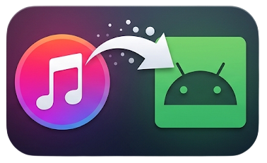

| Copy | Name | # Tracks | Device # Tracks | Delete | Tracks To Copy |
Viamta Music Sync — sync your Music Library to an Android phone running the Viamta Music Sync Companion app.
GPL-3.0. Source:
github.com/andrewroth/visual_itunes_apple_music_to_android